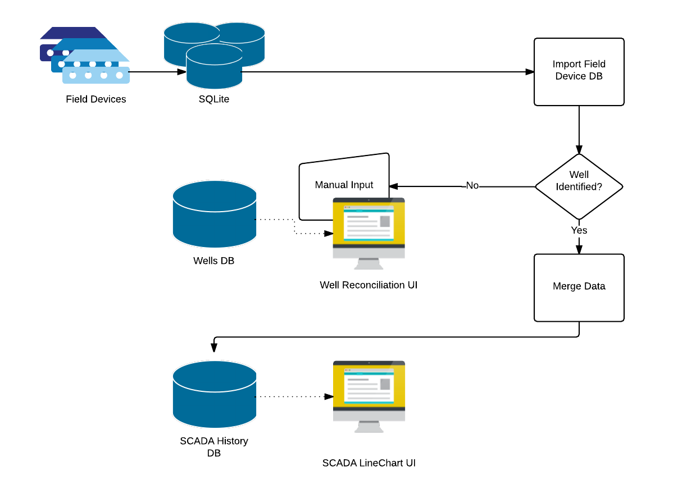

Positioning
I'm a local software consultant with nearly 30 years of intermittent energy-sector experience — from geological data platforms to field monitoring systems to subsea controls. I help operations teams untangle messy internal workflows through small, focused fixes.
Energy Experience
My energy-sector work spans upstream exploration, field operations, and midstream infrastructure. I understand the realities of data accuracy, harsh environments, and operational reliability.
HXMX — Geological Data Platform (2024–2025)
Improved correctness and reliability in a seismic data processing system where geologists needed to trust the output.
Summit ESP → Halliburton (2016–2018)
Unified multiple vendor monitoring systems into a single operations dashboard. The clean UX was used in the Halliburton acquisition pitch.
Control Devices Inc. (1997–1998)
Developed software that controlled subsea equipment for pipeline operations, including real-time monitoring and command interfaces.
Common Problems I Help Fix
- Manual reporting: Field notes, safety logs, and compliance reports that take too long to compile.
- Data inconsistency: Sensor, field monitoring, or spreadsheet data that doesn’t reconcile cleanly.
- Too many tools: Multiple vendor systems that almost work together but never quite do.
- Unclear ownership: No single source of truth, so teams copy/paste and double-check everything.
- Slow feedback loops: Decisions made with stale data because it takes days to prepare reports.
Why Energy Teams Call Me
Energy operations rely on data accuracy and tight coordination. My work focuses on eliminating the friction that shows up between systems and people — without forcing a full rewrite or a big platform shift.
Accuracy Matters
Geological interpretation, field monitoring, and subsea controls all require trusted data.
Integration Complexity
I have a track record connecting vendor systems that never quite talk to each other.
Real-Time and Batch
Experience spans live field monitoring and large-scale analytical processing.
How Engagements Start
I start with one clear operational pain point, a fixed scope, and a short timeframe. The goal is to deliver a visible improvement quickly, then expand only if it makes sense.
Small Fix, Fast Win
A focused build that removes a bottleneck in reporting, scheduling, or data handoffs.
Measured Outcomes
Less manual effort, fewer errors, and more reliable operational visibility.
Optional Next Step
If the first fix works well, we can expand into adjacent workflows.
Summit ESP Snapshot
Summit ESP operators were watching multiple vendor screens and copying information between tools. We built a single-screen dashboard that consolidated the data and matched how operators worked. That system was used in the Halliburton acquisition demo because the story was clear at a glance.
Fleet Overview
One screen for multiple wells and live status.
Well Detail
Operational visibility without bouncing between tools.
Operator View
Clean, usable UI designed for daily operations.
Workflow Context
Here is the high-level workflow view that guided the field data historian build. It shows how data moves from field systems into reporting and operations dashboards.
When AI Helps (And When It Doesn’t)
AI can be useful for summarizing field notes, spotting anomalies, or speeding up report drafts. But it’s never the product — just a tool. If it doesn’t improve real operations, we skip it.